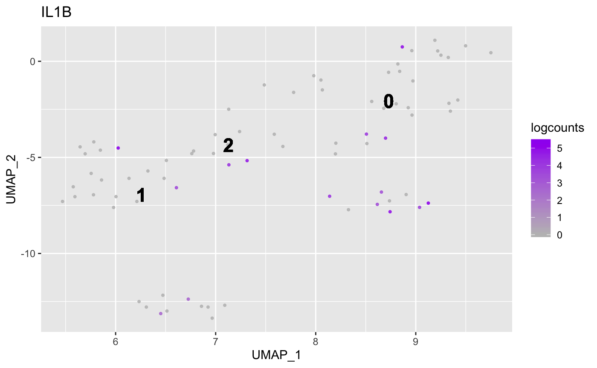
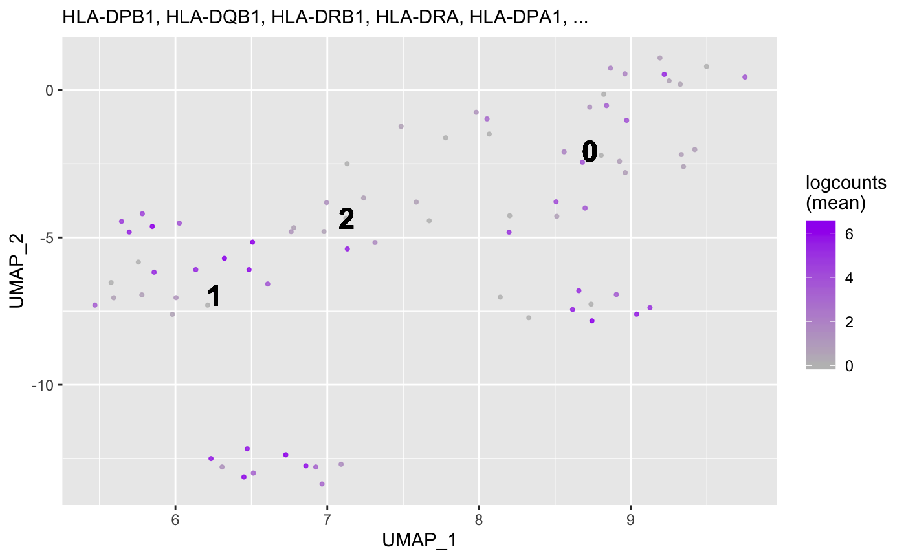

Plot cell types per cluster
plotCellTypesPerCluster(object, markers, ...) # S4 method for SingleCellExperiment,KnownMarkers plotCellTypesPerCluster( object, markers, min = 1L, max = Inf, reduction = "UMAP", expression = c("mean", "sum"), headerLevel = 2L, ..., BPPARAM = BiocParallel::bpparam() ) # S4 method for Seurat,KnownMarkers plotCellTypesPerCluster( object, markers, min = 1L, max = Inf, reduction = "UMAP", expression = c("mean", "sum"), headerLevel = 2L, ..., BPPARAM = BiocParallel::bpparam() )
| object | Object. |
|---|---|
| markers | Object containing gene markers. |
| min |
|
| max |
|
| reduction |
|
| expression |
|
| headerLevel |
|
| ... | Passthrough arguments to |
| BPPARAM |
|
Show graphical output. Invisibly return list.
Plot the geometric mean of the significant marker genes for every known cell
type (per unbiased cluster). Cell types with too few (min cutoff) or too
many (max cutoff) marker genes will be skipped.
Updated 2020-02-21.
data(Seurat, package = "acidtest") data(seurat_known_markers) ## Seurat ==== object <- Seurat markers <- seurat_known_markers plotCellTypesPerCluster( object = object, markers = markers, reduction = "UMAP" )#> #> #> ## Cluster 1 {.tabset} #> #> #> #> ### Macrophage #>#> #> #> ## Cluster 2 {.tabset} #> #> #> #> ### Dendritic Cell #>